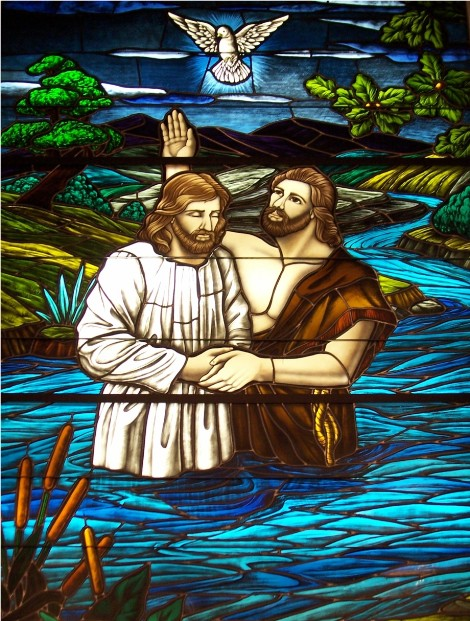

Introduction
In this unit, I studied the covenant path, focusing on how faith, repentance, baptism, and the Holy Ghost bring us closer to Jesus Christ. The scriptures and lessons helped me realize that these steps aren't just a checklist—they're part of an ongoing journey to become more like Him.
2 Nephi 31 – The Doctrine of Christ
This chapter is clear and powerful. Nephi outlines faith in Jesus Christ, repentance, baptism, receiving the Holy Ghost, and enduring to the end. I used to think "enduring" meant simply holding on, but now I see it means actively choosing Christ daily, even when it’s hard.
Image: The baptism of Jesus Christ by John the Baptist – the perfect example of entering the covenant path.
"Enduring to the end isn’t passive. It’s choosing Jesus every day, even in struggle."
2 Nephi 32 – Feasting on the Word
This chapter taught me that reading scripture with the Holy Ghost makes a huge difference. When I read just to finish, I don’t grow. But when I slow down and ask for the Spirit, the words come alive. I’ve started inviting the Spirit before reading, and it’s changed how I learn.
Image: Reading scriptures with the Holy Ghost brings light and understanding – a key lesson from 2 Nephi 32.
Faith and Personal Effort
One thing that stood out was how much our progress depends on our efforts. God won’t force us to grow, but He gives us tools. Faith isn’t just belief—it’s trust strong enough to act. I’ve been working on showing faith through prayer and better habits.
Image: The covenant path is a daily journey of faith, repentance, and discipleship.
Application
- I will pray before studying the scriptures to invite the Spirit.
- I will try to live each day intentionally on the covenant path, not just "coast" through life.
- I will remember that enduring means active discipleship, not passive survival.
This unit reminded me that Jesus Christ walks this path with me. Every step—faith, repentance, baptism, and enduring—is about becoming more like Him and growing closer to Him.